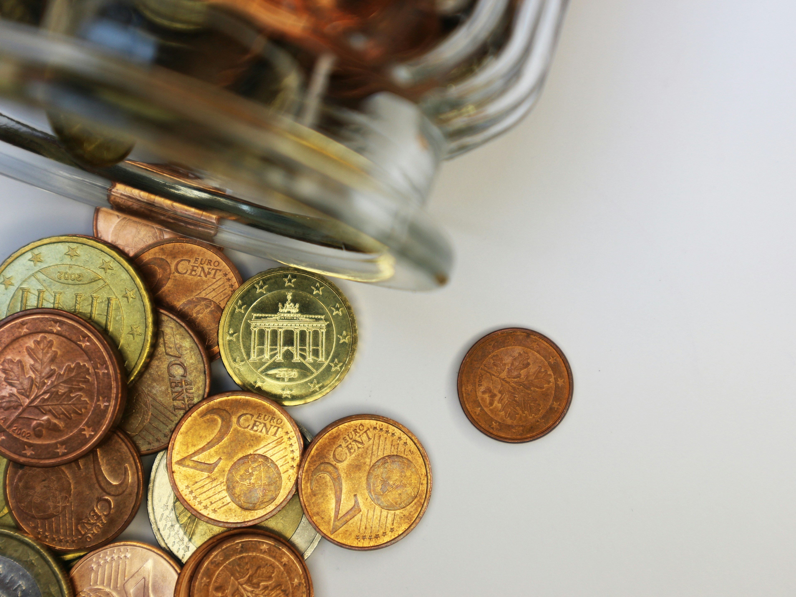

¿Cómo ahorrar 200€ al mes sin esfuerzo?
Publicado el 13 de mayo de 2025 Ahorrar dinero no tiene por qué ser una tarea difícil o frustrante. Con algunos cambios simples y estrategias inteligentes, puedes alcanzar un ahorro mensual de 200€ sin apenas sentirlo. En este artículo descubrirás cómo hacerlo paso a paso.
1. Automatiza tu ahorro
La técnica más poderosa para ahorrar sin esfuerzo es automatizar el proceso. Programa una transferencia automática de 200€ (o 100€, si es más manejable) desde tu cuenta principal a una cuenta de ahorro justo después de recibir tu salario. Al hacerlo, estarás “pagándote a ti primero”, lo que elimina la tentación de gastar ese dinero.
Las cuentas separadas ayudan a visualizar claramente el dinero ahorrado y hacen menos probable que lo toques innecesariamente.
2. Elimina gastos invisibles
Suscripciones que no usas, tarifas bancarias, apps premium olvidadas... estos pequeños gastos se acumulan silenciosamente. Haz una auditoría rápida de tus cuentas y cancela cualquier servicio que no uses realmente. Puedes ahorrar entre 20€ y 50€ al mes con este simple gesto.
3. Planifica tus compras
Ir al supermercado sin lista es una trampa segura. Lleva una lista y cíñete a ella. Además, evita comprar cuando tienes hambre (¡sí, en serio!). Aplica el mismo criterio a ropa, tecnología o caprichos: espera 48 horas antes de comprar algo no esencial. Muchas veces descubrirás que ya no lo necesitas.
4. Cocina en casa
Salir a comer fuera o pedir comida a domicilio puede multiplicar tus gastos. Cocinar tus propios platos no solo es más barato, sino también más saludable. Preparar tu comida semanal (batch cooking) y llevarla al trabajo puede ahorrarte entre 100€ y 150€ mensuales.
5. Usa el método del sobre digital
Divide tu dinero en categorías como “supermercado”, “ocio”, “transporte”, etc. Puedes usar apps como Fintonic, Monefy o incluso sobres físicos si prefieres lo tangible. Una vez que una categoría se queda sin fondos, no gastas más ahí ese mes. Simple, efectivo y visual.
6. Reduce el consumo de energía
Bajar el termostato en invierno un grado, apagar luces y aparatos que no usas o cambiar a bombillas LED puede traducirse en una reducción significativa de tu factura eléctrica. Esto también aplica al agua y al gas. Ahorros combinados: entre 20€ y 40€ al mes.
7. Evita compras impulsivas
Una técnica útil es el método del carrito: añade lo que quieras comprar a tu carrito online, pero no completes la compra de inmediato. Déjalo reposar 24-48 horas. ¿Todavía lo quieres después de ese tiempo? Entonces decide conscientemente.
8. Establece metas visibles
Es más fácil ahorrar cuando tienes un “por qué” claro. Crea una meta visual (una foto de ese viaje, coche, curso o fondo de emergencia) y ponla cerca de tu escritorio o en el fondo de pantalla de tu móvil. Esto mantiene tu motivación alta.
Conclusión
Aunque 200€ al mes puede parecer mucho, verás que es totalmente alcanzable cuando aplicas estos principios. Empieza con los más fáciles y ve sumando. El ahorro no se trata de privación, sino de tomar el control de tu dinero y usarlo de forma inteligente.
Con constancia, disciplina y un sistema sencillo, puedes alcanzar metas que antes parecían imposibles. ¡Empieza hoy mismo!
← Volver a artículos